KOS-MOS
A complete desktop language built from the existing 5K art: ice blue interface lines, navy armor, and an R-core red reserved for warnings.
UI DESIGN PACK // 02Expanded icon system
Original desktop icons plus six new marks. Every icon includes a vector master and multi-size Windows ICO.
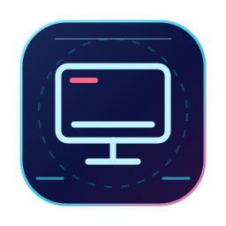
System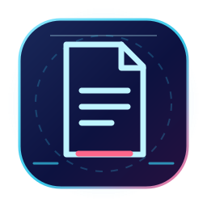
Documents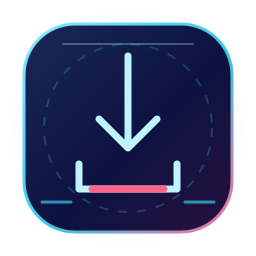
Downloads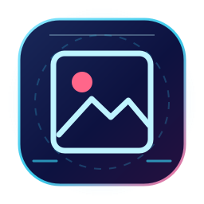
Pictures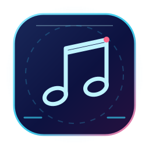
Music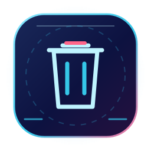
Recycle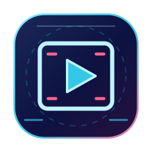
Videos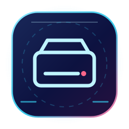
Drive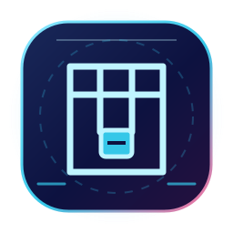
Archive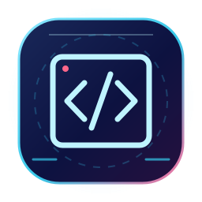
Code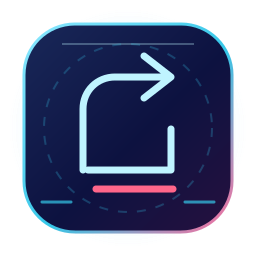
Shortcut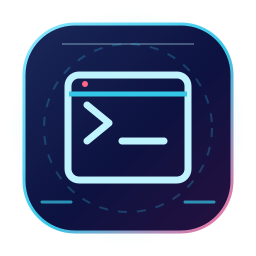
TerminalCursor suite
Bright silhouettes for visibility on the dark wallpaper, with cyan detail and a red core. The theme maps eight Windows cursor roles.
Terminal and identity
The Terminal scheme keeps code legible. The account portrait is a crop of the original wallpaper illustration.
PS D:\> codex status ✓ link established > usage monitor online ● R-CORE / standby PS D:\> ▋
Account portrait
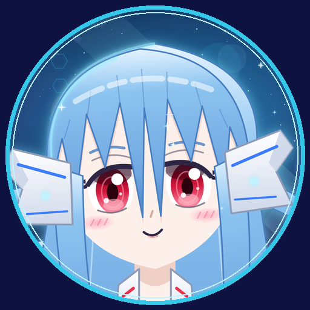
512 × 512 source crop, ready for the Windows account image picker.
Live wallpaper states
Transparent 5K overlays for the existing Lively art. These are visual states; a future data adapter should select them from actual usage events.
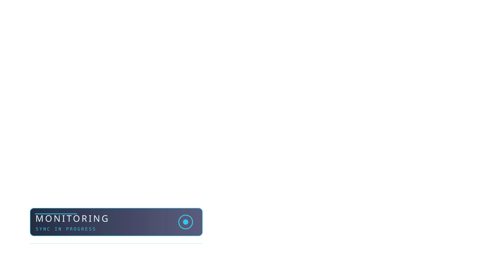
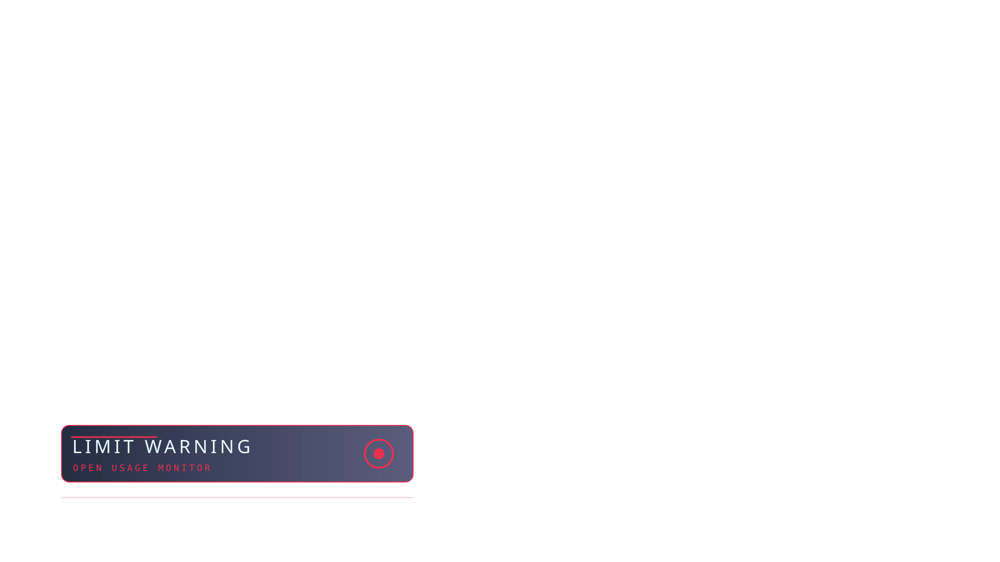
Tray, notification, widget
Small core marks scale for the tray. The widget is a design preview that needs a packaged Windows widget provider for real usage data.
Tray states
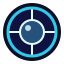
StandbyNotification hero
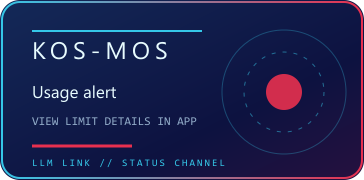
Saved login was revoked. Open Codex and sign in to that account, then refresh the monitor.
Saved login expired. Sign in through Claude Code once, then refresh the monitor.
HTTP 429. Keep the last reading marked as stale and wait for an automatic check.
Recovery cards are presentation concepts based on the observed errors. They contain no live provider values. This page does not change Windows settings.